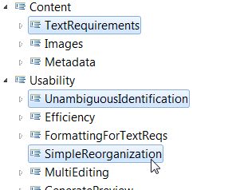

Description: actual content of a the requirement
Description: field for textual description for requirement
Description: integration of images
Description: Integration of sources for images along with build method to build the image. This way only the source of the image has to be under version control, not the image itself (no useful diff possible). Examples:
Description: fields for metadata for requirements ( e.g. state oder version information )
Description: usability and efficiency of the tooling
Description: unambiguous identification of requirements
Description: efficient editing of requirements
Description: formatting for requirements (e.g. as XHTML)
Description: simple way to reorganize requirements (e.g move to other place in structure)
Description: the same field in multiple requirements can be edited with mult select

Description: a preview is needed while editing for fast verification of results
Description: code templates with pre defined values for attributes
Description: traceability between requirements and to external information is needed
Description: optional UUIDs for identification of requirements from outside the requirement model
Description: reference to external documents and pictures
Description: references to other requirements
Description: consistency checks for formal requirements
Description: consistency checks for external diagrams (e.g. UML diagrams in other tool)
Description: different views can be be generated from the same requirement model
Description: generate HTML view as fast preview
Description: outline view as tree to navigate in requirement model and for multi editing
Description: different import interfaces
Description: import for PTC/Integrity
Description: import for RIF format
Description: import for ReqIF format
Description: import for various document formats like WORD, PDF, Excel, Open Office, ...
Description: requirement regarding the support of development processes
Description: Version control for requirements must be possible with GIT, Subversion and other version control systems. branch/merge/diff has to be able without special tooling. This way requirements can be versioned with the same mechanism as the code, even in the same repository.
Description: explicit definition of a version for a requirement
Description: the review of requirements must be supported
Description: non functional requirements
Description: reusability has to be supported e.g. by enabling requirement libraries which can be imported or inheritance of requirements